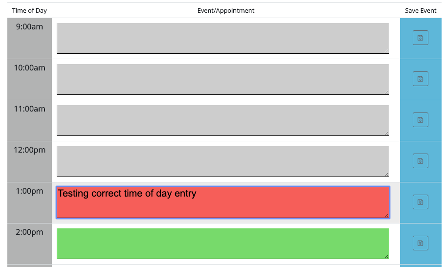
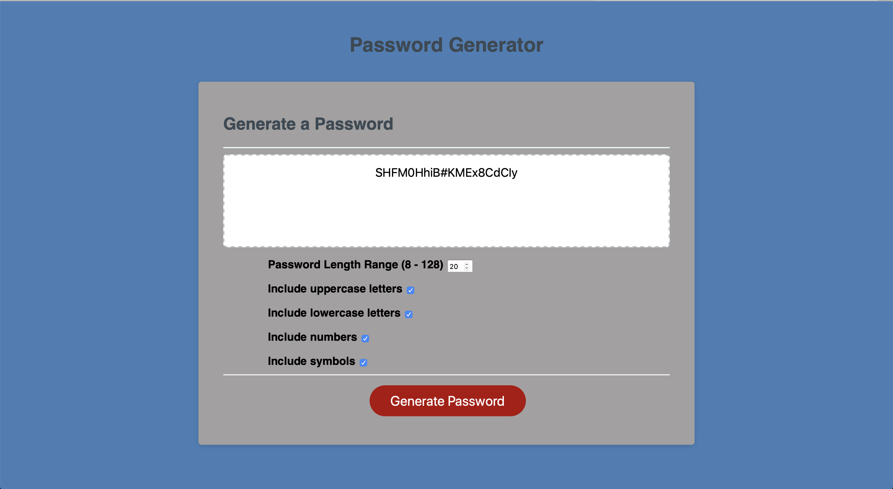

COMPLETED PROJECTS
workday scheduler

Homework requirements The client requested a workday/scheduler that would allow him/her to enter hourly events/appointments. The scheduler needed to be able to manage time of day according to the correct time. Hourly color coding would let the user know if the event/appointment was in the past, present or future. All entries needed to be stored in localStorage as well as to have the capability to return the correct saved information to the Scheduler from localStorage.
password generator repository

Homework requirements The client requested a password generator with the following options:total character range between 8 and 128 characters option to include individually, the following types of characters: Uppercase Lowercase Numbers Symbols results generated should be displayed on the screen or on an alert
bootstrap

ASSIGNMENT GOAL To create a presentation website of myself or fictional character demonstrating the use of Bootstrap elements such as: grid system components layout responsiveness
Page should also include a consistent navbar with working links to other html files in the project. As an extra challenge we needed to add a sticky footer. Also, we needed to manage the development of the webpage with clear and consistent commits that explained the design process.